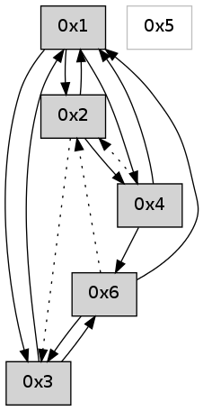

>> << IDX [start] -100 -25 -5 +0 +5 +25 +100 [610.36375308]
 Previous packets
605.000525 beacon06(adaf) #0 coord=01,02,05,03,04,06 cycle=432.0ms assoc 64 ad 1f
605.012207 [Hello(2): seq=900 sym=1 asym=3 sysInfo= stat=1:4,0,0,0/3:1,0,0,0]
----------------------------------------------------------------------
605.442671 beacon01(adaf) #0 coord=01,02,05,03,04,06 cycle=432.0ms assoc
-- color-indic=0 64 58 68
605.452632 beacon02(adaf) #0 coord=01,02,05,03,04,06 cycle=432.0ms assoc 64 09 97
605.462633 beacon05(adaf) #0 coord=01,02,05,03,04,06 cycle=432.0ms assoc 64 af bd
605.472632 beacon03(adaf) #0 coord=01,02,05,03,04,06 cycle=432.0ms assoc 64 33 99
605.482632 beacon04(adaf) #0 coord=01,02,05,03,04,06 cycle=432.0ms assoc 64 95 b3
605.492635 beacon06(adaf) #0 coord=01,02,05,03,04,06 cycle=432.0ms assoc 64 e1 af
605.504276 [Hello(4): seq=406 sym=6,1,2 sysInfo= stat=6:1,0,0,0/1:5,0,0,0/2:5,0,0,0]
605.514880 [Hello(1): seq=305 sym=2,3,4 sysInfo= stat=2:15,0,0,0/3:0,0,0,0/4:7,0,0,0]
----------------------------------------------------------------------
605.934778 beacon01(adaf) #0 coord=01,02,05,03,04,06 cycle=432.0ms assoc
-- color-indic=0 64 9c 07
605.944740 beacon02(adaf) #0 coord=01,02,05,03,04,06 cycle=432.0ms assoc 64 cd f8
605.954739 beacon05(adaf) #0 coord=01,02,05,03,04,06 cycle=432.0ms assoc 64 6b d2
605.964740 beacon03(adaf) #0 coord=01,02,05,03,04,06 cycle=432.0ms assoc 64 f7 f6
605.974742 beacon04(adaf) #0 coord=01,02,05,03,04,06 cycle=432.0ms assoc 64 51 dc
605.984740 beacon06(adaf) #0 coord=01,02,05,03,04,06 cycle=432.0ms assoc 64 25 c0
605.996428 [Hello(2): seq=901 sym=1 asym=3 sysInfo= stat=1:5,0,0,0/3:2,0,0,0]
----------------------------------------------------------------------
606.426888 beacon01(adaf) #0 coord=01,02,05,03,04,06 cycle=432.0ms assoc
-- color-indic=0 64 d1 00
606.436849 beacon02(adaf) #0 coord=01,02,05,03,04,06 cycle=432.0ms assoc 64 80 ff
606.446850 beacon05(adaf) #0 coord=01,02,05,03,04,06 cycle=432.0ms assoc 64 26 d5
606.456848 beacon03(adaf) #0 coord=01,02,05,03,04,06 cycle=432.0ms assoc 64 ba f1
606.466850 beacon04(adaf) #0 coord=01,02,05,03,04,06 cycle=432.0ms assoc 64 1c db
606.476850 beacon06(adaf) #0 coord=01,02,05,03,04,06 cycle=432.0ms assoc 64 68 c7
606.488533 [Hello(4): seq=407 sym=6,1,2 sysInfo= stat=6:2,0,0,0/1:6,0,0,0/2:5,0,0,0]
606.491623 [Hello(1): seq=306 sym=2,3,4 sysInfo= stat=2:0,0,0,0/3:0,0,0,0/4:7,0,0,0]
----------------------------------------------------------------------
606.918996 beacon01(adaf) #0 coord=01,02,05,03,04,06 cycle=432.0ms assoc
-- color-indic=0 64 15 6f
606.928960 beacon02(adaf) #0 coord=01,02,05,03,04,06 cycle=432.0ms assoc 64 44 90
606.938957 beacon05(adaf) #0 coord=01,02,05,03,04,06 cycle=432.0ms assoc 64 e2 ba
606.948959 beacon03(adaf) #0 coord=01,02,05,03,04,06 cycle=432.0ms assoc 64 7e 9e
606.958957 beacon04(adaf) #0 coord=01,02,05,03,04,06 cycle=432.0ms assoc 64 d8 b4
606.968959 beacon06(adaf) #0 coord=01,02,05,03,04,06 cycle=432.0ms assoc 64 ac a8
606.980633 [Hello(2): seq=902 sym=1 asym=3 sysInfo= stat=1:6,0,0,0/3:2,0,0,0]
----------------------------------------------------------------------
607.411105 beacon01(adaf) #0 coord=01,02,05,03,04,06 cycle=432.0ms assoc
-- color-indic=0 64 59 df
607.421065 beacon02(adaf) #0 coord=01,02,05,03,04,06 cycle=432.0ms assoc 64 08 20
607.431067 beacon05(adaf) #0 coord=01,02,05,03,04,06 cycle=432.0ms assoc 64 ae 0a
607.441067 beacon03(adaf) #0 coord=01,02,05,03,04,06 cycle=432.0ms assoc 64 32 2e
607.451066 beacon04(adaf) #0 coord=01,02,05,03,04,06 cycle=432.0ms assoc 64 94 04
607.461068 beacon06(adaf) #0 coord=01,02,05,03,04,06 cycle=432.0ms assoc 64 e0 18
607.472732 [Hello(4): seq=408 sym=6,1,2 sysInfo= stat=6:3,0,0,0/1:7,0,0,0/2:5,0,0,0]
607.476441 [Hello(1): seq=307 sym=2,3,4 sysInfo= stat=2:1,0,0,0/3:0,0,0,0/4:7,0,0,0]
----------------------------------------------------------------------
607.903212 beacon01(adaf) #0 coord=01,02,05,03,04,06 cycle=432.0ms assoc
-- color-indic=0 64 9d b0
607.913173 beacon02(adaf) #0 coord=01,02,05,03,04,06 cycle=432.0ms assoc 64 cc 4f
607.923174 beacon05(adaf) #0 coord=01,02,05,03,04,06 cycle=432.0ms assoc 64 6a 65
607.933173 beacon03(adaf) #0 coord=01,02,05,03,04,06 cycle=432.0ms assoc 64 f6 41
607.943174 beacon04(adaf) #0 coord=01,02,05,03,04,06 cycle=432.0ms assoc 64 50 6b
607.953174 beacon06(adaf) #0 coord=01,02,05,03,04,06 cycle=432.0ms assoc 64 24 77
607.964844 [Hello(2): seq=903 sym=1 asym=3 sysInfo= stat=1:7,0,0,0/3:3,0,0,0]
----------------------------------------------------------------------
608.395321 beacon01(adaf) #0 coord=01,02,05,03,04,06 cycle=432.0ms assoc
-- color-indic=0 64 e5 1d
608.405282 beacon02(adaf) #0 coord=01,02,05,03,04,06 cycle=432.0ms assoc 64 b4 e2
608.415283 beacon05(adaf) #0 coord=01,02,05,03,04,06 cycle=432.0ms assoc 64 12 c8
608.425284 beacon03(adaf) #0 coord=01,02,05,03,04,06 cycle=432.0ms assoc 64 8e ec
608.435283 beacon04(adaf) #0 coord=01,02,05,03,04,06 cycle=432.0ms assoc 64 28 c6
608.445283 beacon06(adaf) #0 coord=01,02,05,03,04,06 cycle=432.0ms assoc 64 5c da
608.456961 [Hello(4): seq=409 sym=6,1,2 sysInfo= stat=6:4,0,0,0/1:8,0,0,0/2:5,0,0,0]
608.460039 [Hello(1): seq=308 sym=2,3,4 sysInfo= stat=2:2,0,0,0/3:0,0,0,0/4:7,0,0,0]
----------------------------------------------------------------------
608.887428 beacon01(adaf) #0 coord=01,02,05,03,04,06 cycle=432.0ms assoc
-- color-indic=0 64 21 72
608.897389 beacon02(adaf) #0 coord=01,02,05,03,04,06 cycle=432.0ms assoc 64 70 8d
608.907390 beacon05(adaf) #0 coord=01,02,05,03,04,06 cycle=432.0ms assoc 64 d6 a7
608.917391 beacon03(adaf) #0 coord=01,02,05,03,04,06 cycle=432.0ms assoc 64 4a 83
608.927390 beacon04(adaf) #0 coord=01,02,05,03,04,06 cycle=432.0ms assoc 64 ec a9
608.937391 beacon06(adaf) #0 coord=01,02,05,03,04,06 cycle=432.0ms assoc 64 98 b5
608.949073 [Hello(2): seq=904 sym=1 asym=3 sysInfo= stat=1:8,0,0,0/3:4,0,0,0]
----------------------------------------------------------------------
609.379536 beacon01(adaf) #0 coord=01,02,05,03,04,06 cycle=432.0ms assoc
-- color-indic=0 64 6d c2
609.389496 beacon02(adaf) #0 coord=01,02,05,03,04,06 cycle=432.0ms assoc 64 3c 3d
609.399497 beacon05(adaf) #0 coord=01,02,05,03,04,06 cycle=432.0ms assoc 64 9a 17
609.409498 beacon03(adaf) #0 coord=01,02,05,03,04,06 cycle=432.0ms assoc 64 06 33
609.419497 beacon04(adaf) #0 coord=01,02,05,03,04,06 cycle=432.0ms assoc 64 a0 19
609.429497 beacon06(adaf) #0 coord=01,02,05,03,04,06 cycle=432.0ms assoc 64 d4 05
609.441139 [Hello(3): seq=409 sym=1,6 sysInfo= stat=1:10,0,0,0/6:1,0,0,0]
609.442657 [Hello(1): seq=309 sym=2,3,4 sysInfo= stat=2:3,0,0,0/3:0,0,0,0/4:7,0,0,0]
609.444877 [Hello(4): seq=410 sym=6,1 asym=2 sysInfo= stat=6:5,0,0,0/1:9,0,0,0/2:5,0,0,0]
----------------------------------------------------------------------
609.871644 beacon01(adaf) #0 coord=01,02,05,03,04,06 cycle=432.0ms assoc
-- color-indic=0 64 a9 ad
609.881605 beacon02(adaf) #0 coord=01,02,05,03,04,06 cycle=432.0ms assoc 64 f8 52
609.891607 beacon05(adaf) #0 coord=01,02,05,03,04,06 cycle=432.0ms assoc 64 5e 78
609.901605 beacon03(adaf) #0 coord=01,02,05,03,04,06 cycle=432.0ms assoc 64 c2 5c
609.911606 beacon04(adaf) #0 coord=01,02,05,03,04,06 cycle=432.0ms assoc 64 64 76
609.921606 beacon06(adaf) #0 coord=01,02,05,03,04,06 cycle=432.0ms assoc 64 10 6a
609.933306 [Hello(2): seq=905 sym=4,1 asym=3 sysInfo= stat=4:0,0,0,0/1:9,0,0,0/3:5,0,0,0]